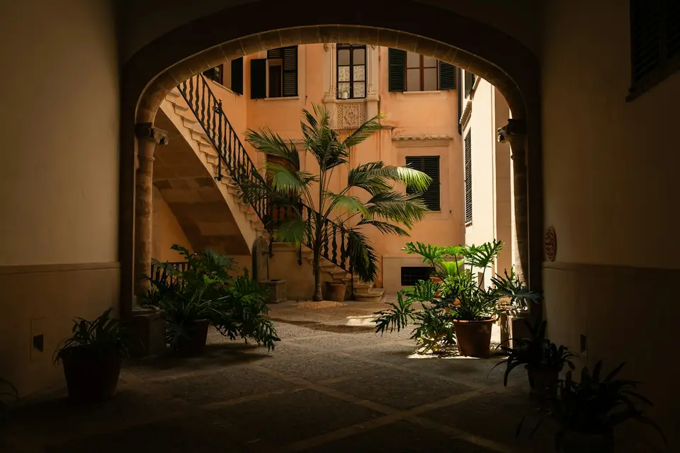
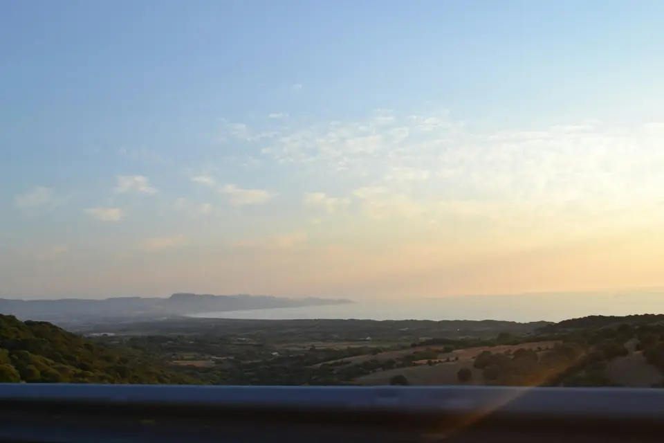
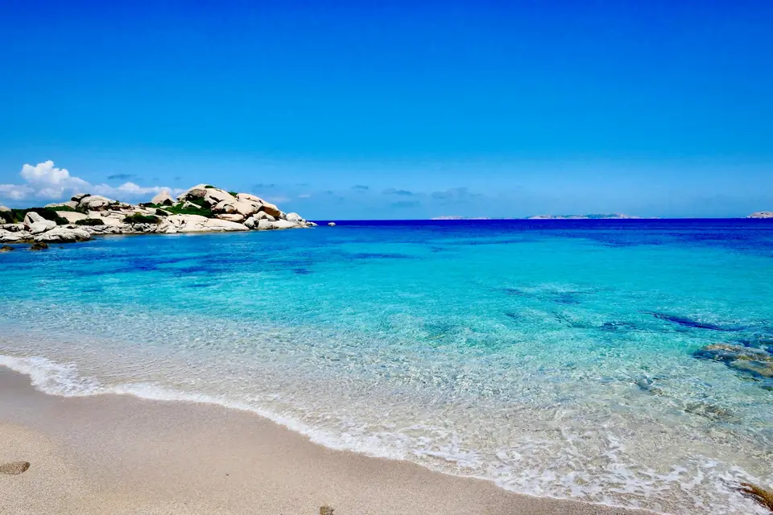
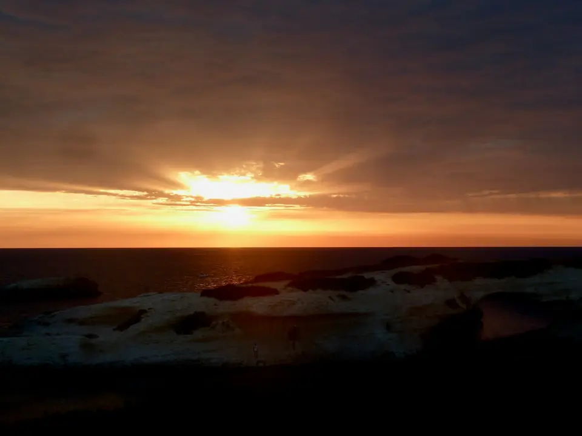

Foto di repertorio
5 minuti di esempio · Borghi e cibo
Il paese
Alle 7 il forno ha già il pane. In piazza c'è un bar, e si arriva a piedi.
Il messaggio arriva a Mockly, che ha costruito questo sito. Nessuna prenotazione viene fatta davvero.
09:30dintorni
Il Sinis è la penisola dove immaginiamo la casa. I minuti sono di esempio: ogni attività ha i suoi.
Tocca un segnaposto sulla mappa: qui compare la sua storia.

Foto di repertorio
5 minuti di esempio · Borghi e cibo
Alle 7 il forno ha già il pane. In piazza c'è un bar, e si arriva a piedi.

Foto di repertorio
10 minuti di esempio · Mare e natura
Si scende dagli scogli. Acqua trasparente e pochi ombrelloni. Porta le scarpe da scoglio.

Foto di repertorio
10 minuti di esempio · Mare e natura
Acqua bassa e cielo largo. Con un po' di fortuna si vedono i fenicotteri rosa.

Foto di repertorio
15 minuti di esempio · Mare e natura
Non è sabbia: sono granelli di quarzo, chiari e rotondi. Si cammina a piedi nudi.

Foto di repertorio
20 minuti di esempio · Storia
Una città fondata dai Fenici, sul mare. Colonne, strade di pietra e una torre che guarda il golfo.

Foto di repertorio
45 minuti di esempio · Storia
Una torre di pietra costruita senza malta, più di tremila anni fa. Si entra, si sale, si guarda lontano.

Foto di repertorio
70 minuti di esempio · Borghi e cibo
Case colorate lungo il fiume Temo e un castello sopra. Il posto giusto per la cena.
Il pomeriggio finisce sempre in terrazza.
Controlla le date